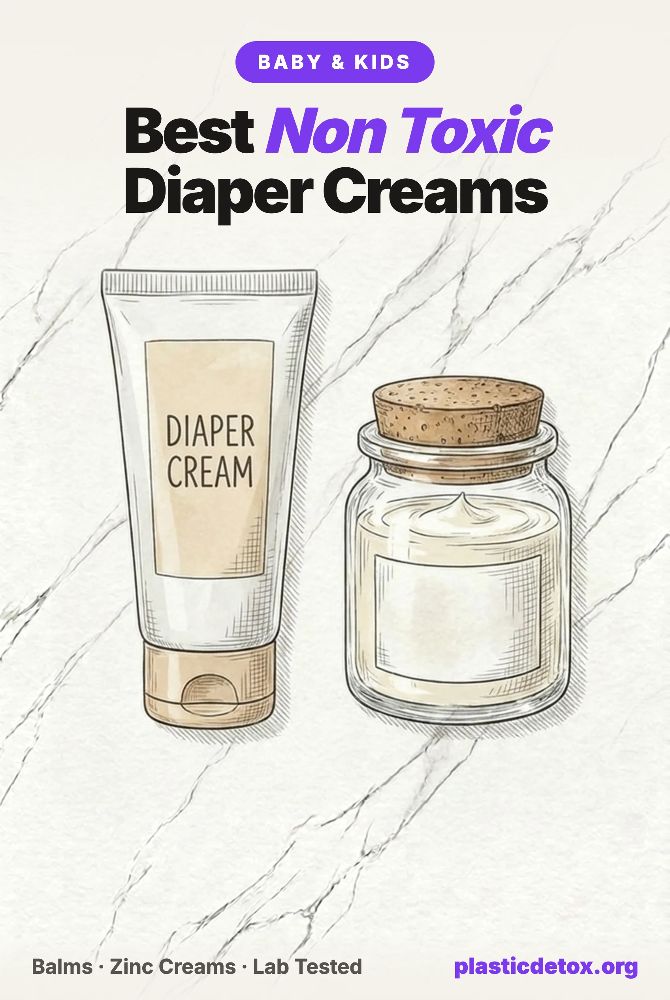

Best Non Toxic Diaper Rash Creams and Baby Balms: The Lead Problem and What Tested Clean (2026)

The 30 Second Summary
- Diaper cream is the highest stakes product on the changing table. It goes on broken or inflamed skin, gets sealed under a warm wet diaper, several times a day, in the age group with the most hand to mouth transfer. What is in the tube matters more here than almost anywhere else.
- Independent testing found lead in every zinc oxide diaper cream tested. In Lead Safe Mama's 2025 to 2026 series, Triple Paste 40 percent zinc read over 4,000 ppb lead, the highest the project has found in the category, Desitin Maximum Strength about 3,300 ppb, Burt's Bees Baby over 2,500 ppb, and Honest, Aquaphor's zinc paste, and others followed. Most also carried cadmium. The lead arrives with the zinc: zinc ore naturally contains lead, and pharmaceutical grade zinc oxide may legally carry roughly 10,000 ppb.
- Exactly one diaper product tested completely clean: La Petite Creme Organic Diaper Balm, a zinc free French style liniment of five ingredients, non detect for lead, cadmium, arsenic, and mercury. It is our best overall pick and the only product here with a clean lab result rather than a clean looking label.
- Prevention and treatment are different jobs. For everyday prevention use a zinc free balm: La Petite Creme, Earth Mama, or Motherlove. For an active rash that needs zinc, Weleda tested lowest for lead of every zinc cream in the series.
- Desitin Maximum Strength still contains talc and fragrance, on top of its lead result. Talc is the ingredient at the center of the Johnson and Johnson baby powder litigation. There is no version of this category where those belong on broken skin.
- A rash that is not better in two to three days is probably yeast, which no barrier cream treats. Shiny bright red, sharp edges, satellite spots, worst in the folds: call the pediatrician.
Diaper rash is the most common skin condition of infancy. Depending on the study, somewhere between 7 and 35 percent of diapered babies have it at any given moment, with the peak around six to nine months. Which means diaper cream is not an occasional product. It is a daily one, applied to skin that is often already inflamed or broken, then sealed under a warm, wet diaper, the same occlusion effect that makes the diaper itself the highest exposure product in the nursery, as we covered in our non toxic diapers guide.
Medicine learned the hard way that broken diaper area skin absorbs what you put on it. For decades, boric acid powders and ointments were a standard nursery treatment for diaper rash, until a series of infant poisonings and deaths, documented in the pediatric literature of the 1940s through 1960s, forced the practice to be abandoned. The lesson was not about boric acid specifically. It was that the diaper area, inflamed, occluded, and highly permeable, is one of the worst possible places for a contaminant to sit.
That lesson is why the newest testing in this category matters so much. Over 2025 and 2026, the independent consumer advocate Lead Safe Mama ran diaper rash creams through third party laboratory heavy metals testing, and the results reshaped how we think about the entire aisle. This guide covers what that testing found, why it happened to every zinc cream at once, what else is hiding in the best selling tubes, and the small set of products we would actually put on a baby. It completes our changing table series alongside the diapers guide and the baby wipes guide.
1. Why Diaper Cream Is a High Exposure Product
Every factor that made us take diapers seriously applies to diaper cream, amplified. The dose is smaller but the skin is worse: cream goes on precisely when the skin barrier is compromised, and damaged skin absorbs far more than intact skin.
2. Barrier Balm vs Zinc Cream: Two Different Jobs
The diaper cream aisle sells two different products in identical tubes, and knowing which job you are shopping for solves most of the category.
A barrier balm is prevention. It is an oil and wax film, olive oil and beeswax in most of the clean ones, tallow in some, that keeps urine and stool off intact skin so irritation never starts. It contains no drug active, which also means it contains no mined mineral powder.
A zinc oxide cream is treatment. Zinc oxide at 10 to 40 percent is what the American Academy of Pediatrics points to for an active rash, alongside petrolatum, applied thickly at every change. It is regulated as an over the counter drug, it works, and nothing in this article argues otherwise. The problem is what arrives in the tube alongside the zinc, which is the next section.
3. The Lead Problem in Zinc Oxide
Readers of our mineral sunscreen guide already know this story. Zinc oxide is refined from mined zinc ore, the ore chemistry almost always includes lead and cadmium minerals, and traces survive into the finished pharmaceutical powder. Pharmaceutical grade zinc oxide is permitted to carry roughly up to 10 parts per million lead, which is 10,000 parts per billion, and there is no federal limit for lead in the finished cream. When Lead Safe Mama's independent testing project found lead in 94 percent of mineral sunscreens, the conclusion was that the contamination is a property of the ingredient, not of any one brand. Diaper cream is the same ingredient, at up to twice the concentration, on broken skin.
Over 2025 and 2026 the same project put the diaper cream category through third party ICP-MS laboratory testing. Every zinc oxide cream tested came back positive for lead, and most also for cadmium.
For scale: Washington State's Toxic Free Cosmetics Act, the first hard lead limit in American personal care law, set 1,000 ppb as the line for cosmetics starting in 2025. Several of the creams above read at multiples of it. Diaper creams are regulated as over the counter drugs rather than cosmetics, so the limit does not directly bind them, which is exactly the gap the results expose: the strictest lead standard in the country does not cover the product most likely to sit on a baby's broken skin.
Two more findings from the series deserve their own sentences. First, certification did not predict contamination: Babo Botanicals and HealthyBaby diaper creams are both EWG Verified and both tested positive for lead, because EWG verifies the ingredient list, not the batch chemistry. Second, one product tested completely clean: La Petite Creme's zinc free balm, non detect for lead, cadmium, arsenic, and mercury, the first and so far only diaper product to earn a spot on the project's lab tested safer choices list. That is not luck. It is what happens when a formula contains no mined mineral at all.
4. What Else Is in the Mainstream Tubes
The lead findings would be enough on their own, but the ingredient panels of the best sellers carry problems that were visible long before anyone rented a mass spectrometer.
| Ingredient | Found in | The problem |
|---|---|---|
| Talc | Desitin Maximum Strength | The ingredient at the center of the J&J baby powder litigation, still listed on Desitin's current drug label |
| Fragrance | Desitin Maximum Strength, scented balms | Undisclosed mixture, historic phthalate carrier, needless allergen on broken skin |
| Balsam of Peru | Boudreaux's Butt Paste, including the Natural line | A top five pediatric contact allergen, in a product for irritated skin |
| Lanolin and lanolin alcohol | Aquaphor, Weleda, A+D, Desitin | Wool derived allergen for some children; purified medical grade lanolin is the safer form |
| Petrolatum and mineral oil | Most mainstream creams | Petroleum derived; safe when fully refined, but refinement is not required or disclosed in US cosmetics |
The fragrance row has a specific receipt in this category. In 2017, A+D diaper rash cream was recalled because it contained trace diethyl phthalate despite a phthalate free label claim. And the reason phthalates in baby products matter is a 2008 study in Pediatrics that measured phthalate metabolites in infant urine and found them in every infant tested, with levels tracking directly with the use of baby lotions and powders, strongest in the youngest babies. Fragrance is the classic phthalate carrier, and a diaper cream is the last place to accept an undisclosed mixture. The same logic drives our wider personal care guide.
None of this requires exotic alternatives. The clean end of this category is olive oil, beeswax, herbs, and, where zinc is genuinely needed, zinc in a plant oil base with nothing else. That is the entire shopping list.
5. Best Balms for Everyday Prevention
Four picks, our top choice first. Every one is zinc free, petroleum free, and fragrance free apart from the natural scent of its plant ingredients, and none contains talc, phthalates, or synthetic preservatives.

La Petite Creme Organic Diaper Balm
A French style liniment of five ingredients: organic extra virgin olive oil, water, beeswax, vegetable glycerin, and lime water. USDA Organic and EWG Verified. Non detect for lead, cadmium, arsenic, and mercury in independent third party testing, the only diaper product with a published clean heavy metals result. Doubles as a no rinse cleanser at changes.
View →
Earth Mama Organic Diaper Balm
Organic herbs, calendula, St. John's wort, plantain, in an olive oil, shea butter, and beeswax base. EWG Verified, Oregon Tilth certified organic, used in hospital NICUs, and the largest owner review base in the category. Zinc free, so the lead route documented in this article does not apply, though the balm itself has no independent metals test, and the brand's separate baby sunscreen tested high for lead, which is why it sits second here.
View →
Motherlove Diaper Balm
USDA Organic via Oregon Tilth and Leaping Bunny certified. Olive oil and beeswax carrying Oregon grape root, myrrh, yarrow, and calendula. No zinc, no petroleum, no lanolin, no fragrance. Safe for cloth diapers, which zinc and petroleum creams are not, and the herbs give it more genuine soothing activity than a plain barrier.
View →
Primally Pure Baby Balm
Grass fed tallow, organic olive oil, emu oil, beeswax, calendula, and marshmallow root. Tallow's fatty acid profile is close to skin's own sebum, which is the argument for it as a barrier. Sold direct from the brand, one ounce jar, the smallest and most expensive per ounce here. Also used for cradle cap and dry patches.
View →One more single ingredient option worth knowing: 100 percent purified medical grade lanolin, sold as nipple cream, is a legitimate diaper barrier in a pinch, one ingredient, no preservatives, though it is an animal wool derivative and a known allergen for a small minority of children.
6. Zinc Creams for an Active Rash
When a rash is established, the AAP's advice stands: zinc oxide or petrolatum, applied thick, at every change. Within that advice you still have a choice about which tube. Given the testing above, our approach is honest rather than absolute: no zinc cream tested fully clean, so we name the one that tested lowest, the one with the cleanest formula, and the tradeoff each carries.

Weleda Calendula Diaper Cream
12 percent zinc oxide with calendula in a lanolin and beeswax base. The only zinc cream with comparative independent data: the lowest lead result of every zinc cream in the 2025 to 2026 testing series, though lead, cadmium, and arsenic were still detected. Contains lanolin and six named natural fragrance allergens including limonene and linalool, so not for wool or fragrance sensitive children.
View →
California Baby Super Sensitive Diaper Rash Cream
Zinc oxide in a 100 percent bio based, fragrance free formula with coconut oil, purified lanolin, and licorice root, from the same brand as our kids sunscreen pick. No synthetic polymers, no talc, no undisclosed fragrance. The tradeoff runs the other way from Weleda: the cleanest label in the zinc category, but no independent heavy metals test on this product yet.
View →7. Products That Look Clean but Need Caution
Each product below is a best seller or a clean aisle favorite, and each has something on its label or in its lab results that the front of the tube does not show. The lead figures are as published by Lead Safe Mama's testing series; no regulator has found any product below in violation, and none has been recalled for metals.
Desitin Maximum Strength
The category's flagship, 40 percent zinc oxide, marketed as the pediatricians' choice. Its current drug label lists talc and fragrance among the inactive ingredients, and independent testing reported about 3,300 ppb lead plus cadmium. Talc is the ingredient whose contamination history drove the J&J baby powder litigation, tens of thousands of claims and a proposed multibillion dollar settlement, and lead in Desitin products was the subject of Prop 65 notices as far back as 1999. Effective, but every part of that sentence has a cleaner substitute.
Triple Paste
Marketed on what it leaves out, no fragrance, no talc, no phthalates, no dyes, and the 40 percent maximum strength version still returned over 4,000 ppb lead, the highest result the testing project has found in a diaper cream. A clean free from list on the front says nothing about batch chemistry, which is the whole lesson of this article.
Burt's Bees Baby Diaper Rash Ointment
The 100 percent natural origin label is the brand's entire identity, and the 40 percent zinc ointment tested at over 2,500 ppb lead plus cadmium. The parent brand also faces PFAS related class action litigation over natural claims in its cosmetics line. Natural sourcing and mined mineral contamination are simply different questions.
Aquaphor: know which product you are holding
Aquaphor Healing Paste Baby, the zinc oxide version, reported roughly 1,400 ppb lead. The classic Aquaphor Baby Healing Ointment is a different formula, 41 percent petrolatum, no zinc, and was not part of the lead findings; its considerations are petroleum origin and lanolin alcohol, a wool allergen. If your pediatrician recommends Aquaphor, the distinction between the two nearly identical tubes is worth knowing.
Boudreaux's Butt Paste
Original contains Balsam of Peru, which sits in the top five pediatric contact allergens in North American patch test data, an odd choice for skin that is already inflamed. The Natural Aloe line still lists Peruvian balsam oil. Separately, the parent company was named in a 2020 Prop 65 notice over lead in a diaper rash ointment. The brand has not been part of the recent independent testing series.
Honest Sensitive Diaper Rash Cream
The same brand whose adjectives we flagged in the diapers and wipes guides. The sensitive marketed zinc cream reported over 1,600 ppb lead plus cadmium in independent testing. Materials marketing and batch testing keep telling different stories at this company.
Green Goo Baby Balm
A small brand herbal balm whose ingredient list includes comfrey. Comfrey contains pyrrolizidine alkaloids, which are toxic to the liver, absorption increases through broken skin, infants are uniquely susceptible, and standard references contraindicate its use in children entirely. Herbal is not a synonym for safe; this is the clearest example in the category.
EWG Verified creams that tested leaded
Babo Botanicals and HealthyBaby diaper creams both carry EWG Verified status and both tested positive for lead. The certification audits what a formula intentionally contains and does its job well at that; it does not test batches for contamination. We still treat EWG Verified as a meaningful signal, including for the HealthyBaby wipes we recommend, which contain no mineral powder. But in any category built on a mined mineral, only a lab result answers the contamination question.
8. Prevention Beats Any Cream
The best diaper rash strategy uses less product, not more. Rash is a moisture and friction problem before it is anything else, and the boring mechanics outperform every tube in this article.
- Change promptly. Urine plus stool plus time is the recipe. The single biggest rash preventer is not letting the mixture sit.
- Air is the best barrier. A few minutes of bare bottom time at changes, longer during a flare, does what no cream does: lets the skin dry completely.
- Pat, do not rub, and let skin dry before the new diaper closes. A clean wipe matters here too; our wipes guide covers why fragrance and phenoxyethanol on the same skin work against you.
- Thin daily film of a zinc free balm on the areas that stay wet. Prevention needs a film, not a frosting layer.
- Know the yeast signs. A rash that is shiny bright red with sharp borders and satellite spots beyond the main patch, worst in the folds, or any rash not improving after two to three days of barrier cream, is a pediatrician call, not a bigger scoop of cream. Candida is the most common infectious cause of diaper rash, it often follows antibiotics, and no barrier product treats it. Blisters, pus, crusting, or fever: call the same day.
For the rest of the changing table, the diapers guide and wipes guide complete the set, the complete baby and toddler guide covers every other category, and our Product Check tool holds the lawsuit and recall records for several hundred brands.
9. Frequently Asked Questions
What is the safest diaper rash cream?
For everyday prevention, La Petite Creme Organic Diaper Balm is our top pick and currently stands alone: it is the only diaper product we know of that has passed independent heavy metals testing with nothing detected, because it contains no zinc oxide, just organic olive oil, water, beeswax, glycerin, and lime water. Earth Mama Organic Diaper Balm and Motherlove Diaper Balm are excellent zinc free alternatives with organic certifications. For an active rash that needs zinc oxide, Weleda Calendula Diaper Cream returned the lowest lead result of every zinc cream in independent testing, and California Baby Super Sensitive is the cleanest fragrance free zinc formula, though it has not been independently tested for metals.
Do diaper rash creams contain lead?
Every zinc oxide diaper cream tested in Lead Safe Mama's 2025 to 2026 series came back positive for lead, and most also for cadmium. Reported results include Triple Paste 40 percent zinc at over 4,000 parts per billion, the highest the project has found in the category, Desitin Maximum Strength at about 3,300 ppb, Burt's Bees Baby at over 2,500 ppb, Honest Sensitive at over 1,600 ppb, and Aquaphor Healing Paste Baby at roughly 1,400 ppb. The lead comes with the zinc: zinc ore naturally carries lead and cadmium, and pharmaceutical grade zinc oxide is allowed to contain up to roughly 10,000 ppb lead. The only diaper product in the series that tested completely clean was a zinc free balm, La Petite Creme.
Is Desitin safe for babies?
Desitin Maximum Strength is effective at its job, 40 percent zinc oxide is a genuinely strong barrier, but its current label lists talc and undisclosed fragrance among the inactive ingredients, and independent testing measured about 3,300 parts per billion lead in it. Talc is the ingredient at the center of the Johnson and Johnson baby powder litigation, and fragrance on broken diaper area skin is an unnecessary allergen risk. Similar zinc concentrations exist in formulas without talc or fragrance, so there is no reason to accept those tradeoffs.
Is zinc oxide safe for babies?
Zinc oxide itself is what pediatricians recommend for diaper rash, it is FDA recognized as safe and effective as a skin protectant, and it works. The problem is not the zinc, it is what rides along with it. Zinc oxide is refined from mined ore that naturally contains lead and cadmium, pharmaceutical grade zinc oxide may legally carry up to roughly 10,000 ppb lead, and independent testing has found lead in every zinc diaper cream tested. Our approach: use a zinc free barrier balm for everyday prevention, reserve zinc cream for active rash flares where it genuinely helps, and choose the zinc cream with the lowest tested lead.
What does the AAP recommend for diaper rash?
The American Academy of Pediatrics recommends barrier products based on zinc oxide or petrolatum, applied thickly, its guidance compares the right amount to icing on a cupcake, at every change during a rash, and says fragrance free products are best. It also advises against scrubbing the paste fully off between changes, since the scrubbing itself damages healing skin. Change diapers promptly, give bare bottom air time when you can, and pat rather than rub. Frequent changes and air do more to prevent rash than any product does.
When should I see a pediatrician about diaper rash?
If a rash is not improving after two to three days of barrier cream and frequent changes, it may be yeast rather than irritation. Candida is the most common infectious cause of diaper rash and no barrier cream treats it. Yeast rash typically looks shiny and bright red with sharp edges and small satellite spots beyond the main patch, sits worst in the skin folds, and often follows a course of antibiotics. Also call the pediatrician for blisters, pus, crusting, bleeding, fever, or a baby in real pain.
Is Aquaphor safe for diaper rash?
Two different products share the name. Aquaphor Baby Healing Ointment, the classic tub, is 41 percent petrolatum with no zinc oxide, and petrolatum is one of the two barrier ingredients the AAP recommends; it is petroleum derived and contains lanolin alcohol, a wool allergen, but it was not part of the lead findings. Aquaphor Healing Paste Baby, the newer zinc oxide version, tested at roughly 1,400 parts per billion lead in independent testing. If you use Aquaphor, use the original zinc free ointment, and know that plant based barrier balms do the same prevention job without the petroleum base.
Related Articles
- Best Non Toxic Diapers: What Tested Clean and What to Watch
Lab testing found PFAS markers in 23 percent of diapers, including eco brands. The picks that tested clean. - Best Non Toxic Baby Wipes
Most wipes are plastic fabric soaked in preservatives. The plastic free picks and the brands facing lawsuits. - Mineral vs Chemical Sunscreen: Which Is Safer?
The same zinc oxide lead problem, in the other product parents apply daily. What tested lowest. - The Non Toxic Baby Registry
141 vetted picks across feeding, sleep, diapers, bath, and travel. No sponsored placements. - Top 100 Baby and Kids Products on Amazon, Reviewed
The best selling baby products rated skip, use carefully, or good choice against the evidence.